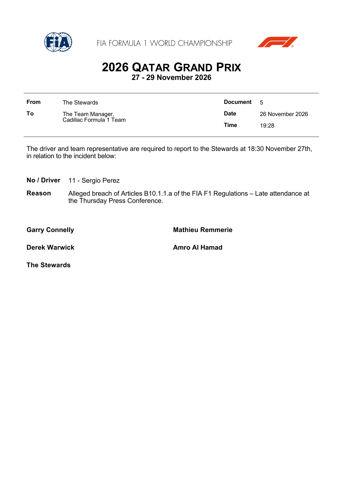
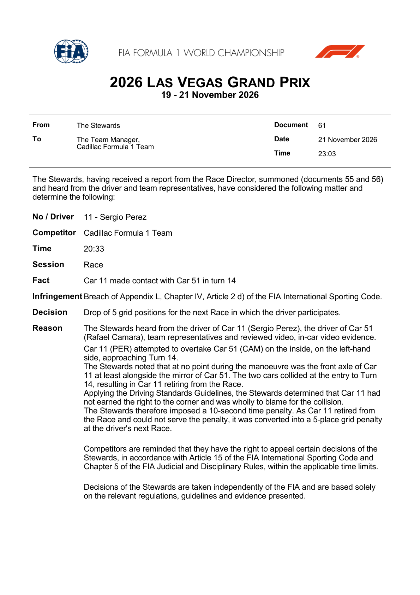
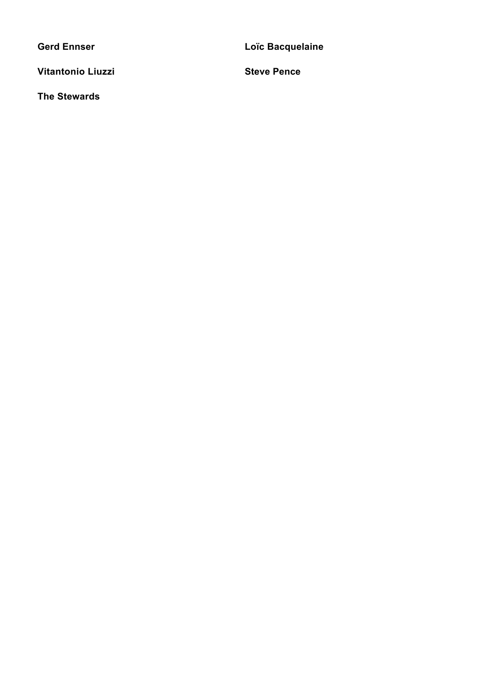

Penalties & Stewards
Las Vegas Document 61 applies a five-place grid drop to Sergio Perez at this event; it is not a Qatar stewards' decision.
FIA official stewards' decisions and summons
Official source; curated transcription may await review. Linked PDFs are the authority. Discovery does not extract or verify numeric values, and does not replace the curated material below.
Last successful FIA document discovery: 2026-11-27T08:12:27.538529+00:00. This is retrieval time, not issue time; newer revisions may exist.
- 2026_qatar_grand_prix_-_summons_-_car_11_-_late_attendance_of_the_thursday_press_conference.pdf (official PDF)
Summons request a hearing; they are not findings or penalties.
| Doc | Driver | Session | Matter | Ruling |
|---|---|---|---|---|
| Qatar Doc 5 | Sergio Perez #11 Cadillac Formula 1 Team | Qatar Grand Prix — Stewards' hearing | Alleged late attendance at the Thursday Press Conference. | Note The driver and team representative are summoned for 18:30 local on Friday 27 November. This is an allegation, not a finding or penalty; no ruling is recorded in this summons.View FIA decision — 1 pageOriginal FIA PDF. Retrieved 2026-11-27T08:12:33+00:00 (not the issue date).  |
| Las Vegas Doc 61 | Sergio Perez #11 Cadillac Formula 1 Team | Las Vegas Grand Prix — Race | Turn 14 collision with Rafael Câmara; the stewards found Perez wholly responsible. | Penalty The 10-second time penalty was converted after his retirement into five grid places at the next race in which he participates (Qatar).View FIA decision — 2 pagesOriginal FIA PDF. Retrieved 2026-11-27T08:12:41+00:00 (not the issue date).   |
Source: FIA — Qatar Grand Prix documents (stewards' decisions).